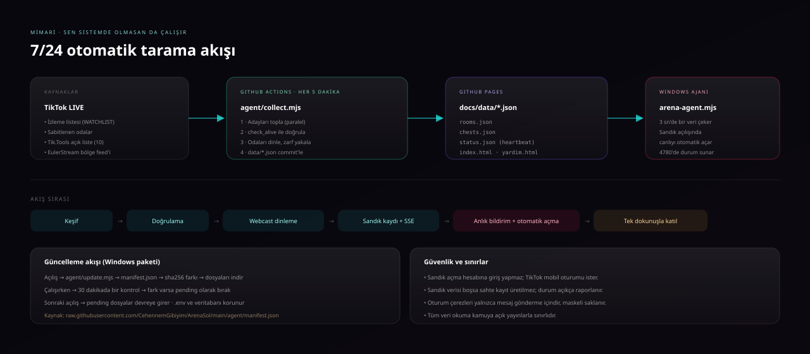
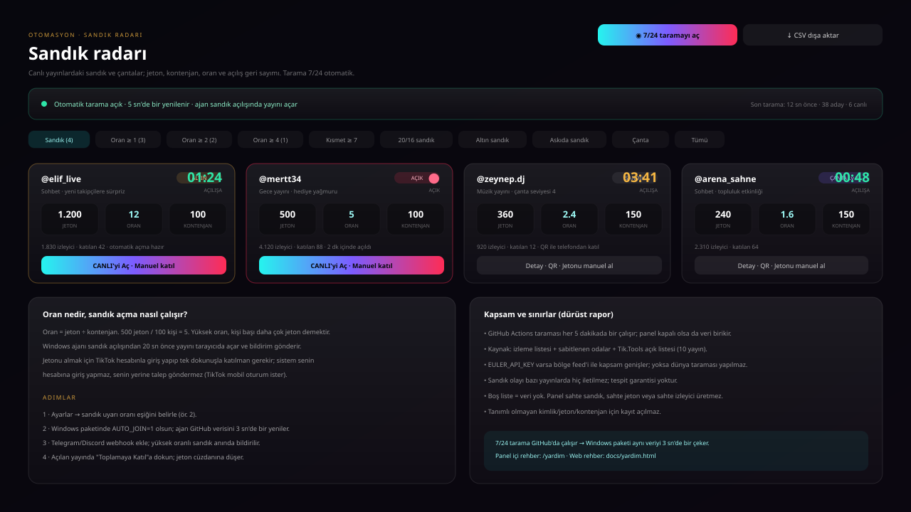
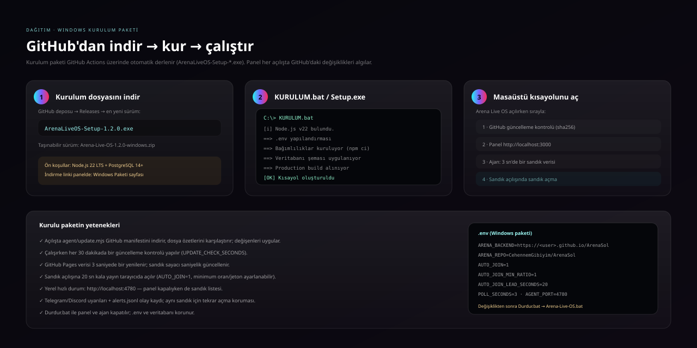
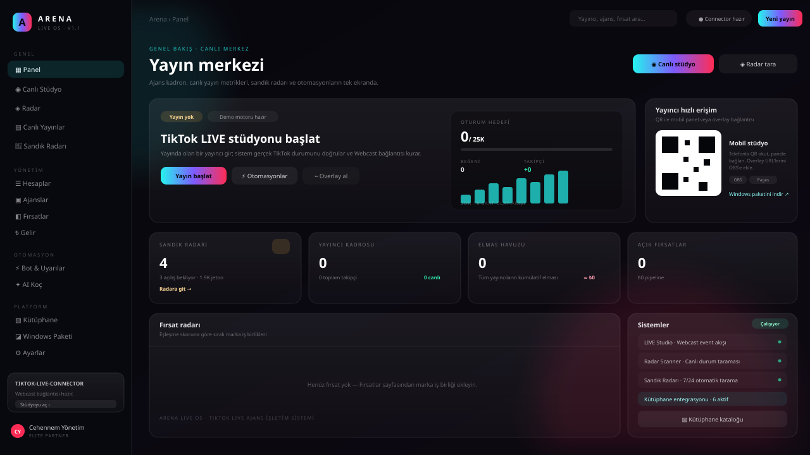

REHBER · RESİMLİ ANLATIM
Arena Live OS nasıl kurulur?
Panel, 7/24 çalışan GitHub taraması ve Windows paketi. Aşağıdaki adımlar hem web paneli hem de
masaüstü kurulumu için geçerlidir. Panel içinde de aynı rehber /yardim adresinde durur.
1 · Veri akışı — sen sistemde olmasan da çalışır
GitHub Actions her 5 dakikada bir agent/collect.mjs çalıştırır: adayları toplar, canlılığını
doğrular, odaları dinler ve sandıkları docs/data/*.json dosyalarına yazar. GitHub Pages bu dosyaları
yayınlar; web paneli ve Windows paketi aynı veriyi okur.

2 · Web paneli (GitHub Pages)
- Depo → Settings → Pages → Source: GitHub Actions.
- Actions → Deploy web panel to GitHub Pages çalıştır (veya main'e push et).
https://<kullanıcı>.github.io/<depo>/adresini aç.- Sandık sayaçları saniyelik, veri 5 sn'de bir yenilenir. ⬇ Windows paketi düğmesi Releases sayfasına gider.

Web paneli yalnızca okuma yapar; tarayıcı kapalı olsa bile GitHub'daki tarama devam eder.
Tarama geçmişi: Actions → Collect live rooms + chests · Durum dosyası: docs/data/status.json.
3 · Windows kurulumu

Gereksinimler
- Windows 10/11 (64-bit)
- Node.js 22 LTS — nodejs.org
- PostgreSQL 14+ (yerel kurulum önerilir)
Kurulum
- Releases sayfasından
ArenaLiveOS-Setup-*.exeindir (taşınabilir:-windows.zip). - Kurulumu çalıştır, ardından masaüstündeki Arena Live OS kısayolunu aç.
- Zip kullanıyorsan: arşivi aç →
KURULUM.bat→ sihirbaz veritabanı,.env, bağımlılıklar ve build'i tamamlar. - Panel
http://localhost:3000adresinde açılır; ajan ayrı pencerede çalışır.
KURULUM.bat → ilk kurulum (Node + PostgreSQL kontrolü, .env, npm ci, drizzle push, build) Arena-Live-OS.bat → paneli + ajanı başlatır, GitHub güncellemesini kontrol eder Durdur.bat → panel ve ajanı kapatır
Not: Port 3000 doluysa .env içinde PORT=3100 yaz ve tekrar başlat.
4 · Açılışta otomatik güncelleme
Arena-Live-OS.bat her açılışta agent/update.mjs çalıştırır. Betik
raw.githubusercontent.com/<repo>/main/agent/manifest.json dosyasını indirir, her dosyanın
sha256 özetini yerelle karşılaştırır ve değişenleri uygular. Çalışan betikler Windows'ta kilitli olduğu için
.pending olarak bırakılır ve sonraki açılışta devreye girer. Ajan çalışırken de 30 dakikada bir
kontrol yapılır.
agent/manifest.json → sürüm + dosya özetleri agent/data/update.json → son kontrol sonucu agent/data/panel.json → ajanın çektiği güncel sandık/yayın listesi agent/data/alerts.jsonl → otomatik açma ve bildirim kayıtları
5 · 7/24 tarama ayarları

- GitHub deposu → Settings → Secrets and variables → Actions:
EULER_API_KEY(opsiyonel, bölge feed'i),WATCHLIST(virgüllü kullanıcı adları),MAX_ROOMS. - Panelde Ayarlar → Sandık radarı tarayıcısı: tarama aralığı, eşzamanlı oda, uyarı oranı/jeton eşiği.
- Panel açıkken
POST /api/radar/scananlık tarama başlatır; panel kapalıyken GitHub cron devralır.
Anahtarsız kapsam sınırlıdır: izleme listesi + sabitlenen odalar + Tik.Tools açık listesi (10 yayın).
Daha geniş kapsam için EULER_API_KEY gerekir. Liste boşsa sahte veri üretilmez.
Hiçbir anahtar zorunlu değildir: keşif ve dinleme ücretsiz çalışır;
SIGN_API_KEY yalnızca bağlantı kotasını yükseltir.
6 · Sandık açma asistanı
.envdosyasındaAUTO_JOIN=1(varsayılan açık).- Eşikleri ayarla:
AUTO_JOIN_MIN_RATIO=1,AUTO_JOIN_MIN_COINS=100,AUTO_JOIN_LEAD_SECONDS=20. - Ajan, sandık açılışına 20 sn kala
https://www.tiktok.com/@kullanıcı/liveadresini tarayıcıda açar. - Açılan yayında Toplamaya Katıl'a dokun — jeton cüzdanına düşer.
- Aynı sandık için
AUTO_JOIN_COOLDOWN_SECONDS(varsayılan 30 dk) koruması vardır.
Dürüst sınır: Sandık açma asistanı yalnızca yayını açar ve bildirir; jeton toplamaz. TikTok zarf/jeton toplama işlemi mobil uygulama oturumu ister; sistem hesabına giriş yapmaz ve senin adına talep göndermez.
7 · Sorun giderme
- DATABASE_URL is required →
.enviçindeki bağlantı dizesini düzenle. - ECONNREFUSED 5432 → PostgreSQL servisini başlat:
Get-Service postgresql*. - Panel açılmıyor →
Durdur.batsonraArena-Live-OS.bat; port çakışmasını kontrol et. - Sandık listesi boş →
docs/data/status.jsonve Actions loglarına bak; veri yoksa tarama henüz sonuç üretmemiştir. - Güncelleme inmedi → internet erişimi ve
ARENA_REPOdeğerini kontrol et; manifest 30 dakikada bir yeniden denenir.
8 · Video anlatımlar
video-kurulum.mp4 olarak ekleyip bağlantıyı güncelle.
video-sandik.mp4.
video-pages.mp4.